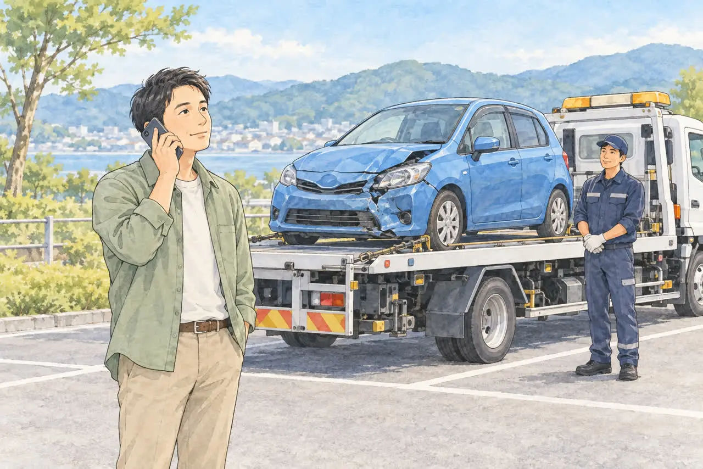
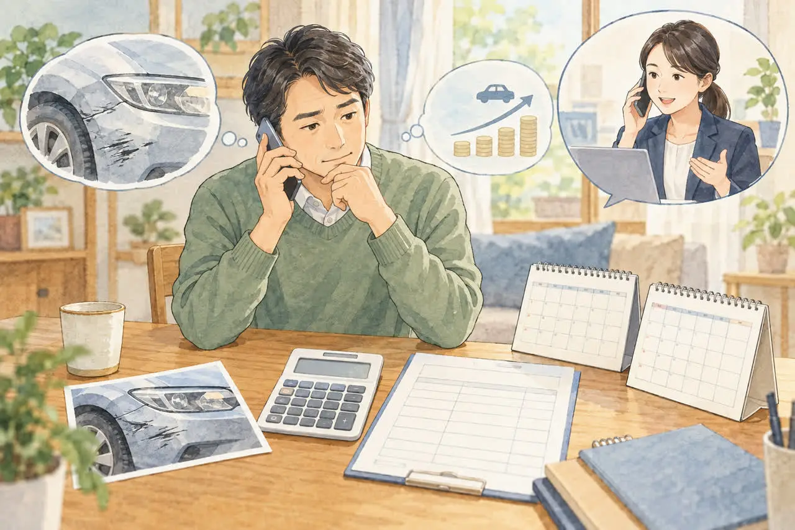
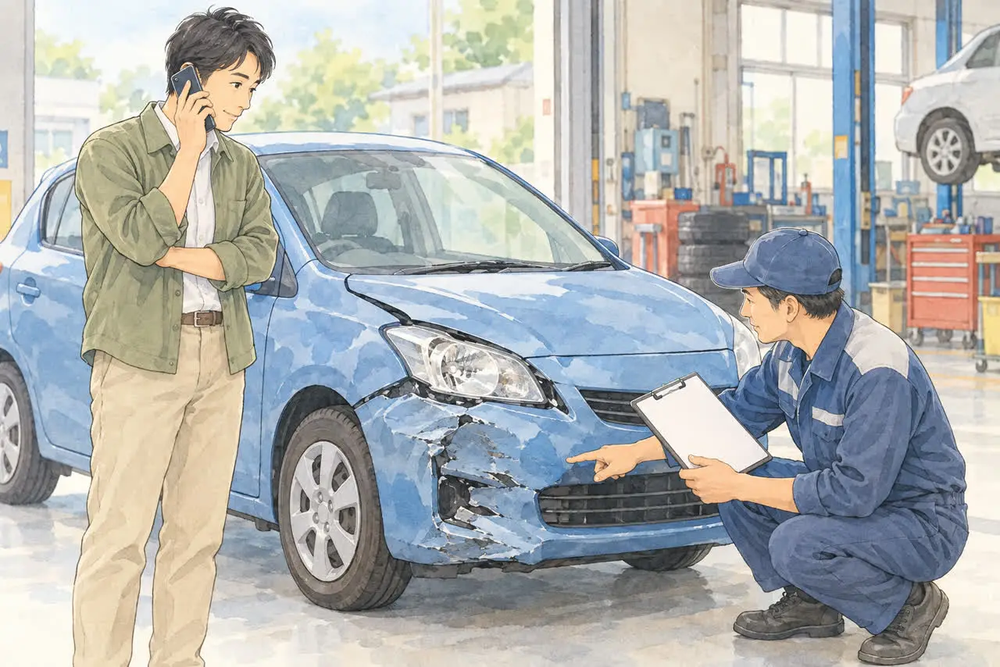
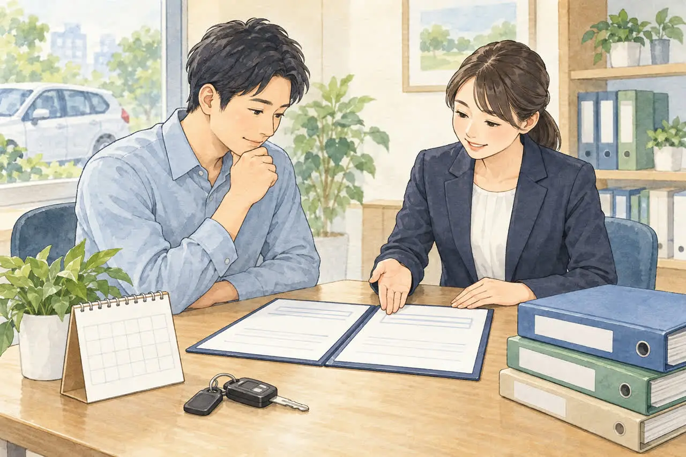

事故のあとの保険で迷っている方へ
事故を起こしたときの保険の使い方
レッカー・等級・車両保険・廃車のときの注意
公開
こんにちは、東京都足立区江北で自動車解体・廃車買取をしている「大崎商店 環七店」です。
「事故を起こしたけれど、保険を使うと保険料が上がるのでは？」
「レッカーを頼んだら、等級が下がってしまう？」
「車が壊れたけれど、修理するのと廃車にするの、どちらがいい？」
事故のあとは、保険の話がいくつも出てきて、何をどう確認すればいいのか迷いますよね。
この記事では、事故を起こしたあとの保険の使い方を、「レッカー」「保険金の請求」「廃車にするとき」の3つに分けて、やさしくご紹介します。
事故直後の対応（警察への連絡やレッカーの手配）は、「事故を起こして車が動かないときの対応」の記事でご紹介しています。
※保険の内容は、保険会社やご契約の条件によって異なります。この記事は一般的な説明です。くわしくは、必ずご契約の保険会社にご確認ください。
事故のあとに保険でできることは、大きく3つ
事故のあとの保険は、次の3つに分けて考えると、わかりやすくなります。
| 内容 | 等級への影響 | |
|---|---|---|
| ① ロードサービス（レッカーなど） | 動かなくなった車を、運んでもらう | 使うだけなら、一般に影響しません |
| ② 保険金の請求 | 車の修理代や、相手への賠償などを、保険で支払う | 事故の内容によって、等級が下がります |
| ③ 廃車のときの手続き | 保険の解約や、中断証明書の発行 | — |
それぞれ、見ていきましょう。
① レッカーだけの利用なら、等級は下がらないのが一般的です

ご契約の任意保険にロードサービスが付いていれば、動かなくなった車を、契約の範囲内で、自己負担なく運んでもらえる場合があります。
レッカーなどのロードサービスを使うだけなら、翌年の等級は下がらないのが一般的です。 ただし、保険会社によって扱いが違うことがあるので、手配の前に確認しておくと安心です。
気をつけたいこと
- 無料で運べる距離や、条件は、保険会社によって違います。距離が長い場合や、特殊な作業が必要な場合は、自己負担になることがあります。
- 自分で業者を手配する前に、保険会社の指定窓口へ連絡してください。事前に連絡しないで手配すると、費用が対象外になる場合があります。
- 運び先は、修理工場やご自宅などを相談できますが、運び先にも契約上の条件があります。
レッカーの頼み方や、運び先を決めるときのポイントは、「事故を起こして車が動かないときの対応」の記事でご紹介しています。
② 保険金を請求すると、等級が下がることがあります

ロードサービスの利用と、保険金の請求（車の修理代や、相手への賠償を、保険で支払ってもらうこと）は、別のものです。保険金を請求すると、事故の内容によって、翌年の等級が下がります。
等級が下がる事故の種類
一般に、事故は次のように分けられます。
- 3等級ダウン事故：相手にけがをさせたり、相手の車を壊したり、自分の車の損害を保険で支払ったりした事故など、多くの事故がこれにあたります
- 1等級ダウン事故：盗難や、飛び石、台風・洪水などの災害による車の損害など
- ノーカウント事故：人身傷害保険や搭乗者傷害保険だけで保険金を受け取った場合など、等級に影響しない扱いの事故。対象は契約によって異なります
ロードサービスだけの利用も、一般的に等級に影響しません。ただし、保険金請求における「ノーカウント事故」の説明とは分けて考えます。車両保険を使う場合でも、車両無過失事故に関する特約などの条件を満たせば、等級に影響しないことがあります。
どの事故がどの扱いになるかは、保険会社の約款によって異なります。
等級とは別に「事故有係数適用期間」も確認しましょう
3等級ダウン事故があると、等級が下がるだけでなく、「事故有係数」という割引率の低い扱いが、一定の期間つづきます。たとえば、3等級ダウン事故なら、翌年の契約から3年間、事故有係数が適用されるのが一般的です。そのため、保険料は、等級が下がった直後だけでなく、数年間、高くなりやすくなります。1等級ダウン事故は通常1年間です。既に事故有係数が適用されている場合や、複数の事故がある場合は、期間が変わることがあります。
たとえば、事故有係数適用期間が0年の15等級の方が、3等級ダウン事故で保険を使った場合、翌年は12等級・事故有係数3年となるのが一般的です。その後に等級ダウン事故がなく、1年ごとに更新すれば、13等級・残り2年、14等級・残り1年、15等級・残り0年と進みます。「等級」と「事故有係数の残り年数」は、別々に確認してください。
保険を使うか、自費で直すか
修理代が小さいときは、保険を使うと保険料が上がる分のほうが、修理代より高くなる場合もあります。使う前に、次のことを保険会社に確認しましょう。
- 今回の事故は、何等級ダウンの扱いになるか
- 事故有係数は、何年間つくか
- 保険を使った場合・使わなかった場合で、今後数年間の保険料にどのくらい差があるか
- 車両保険に、免責金額（自己負担の額）があるか
相手への賠償やけが人がいる事故は、修理代だけで判断しないでください。まず保険会社へ連絡し、相手とその場で支払い額や示談を約束せず、担当者と対応を相談しましょう。事故の連絡をしただけで、直ちに保険金の請求が確定するわけではありません。
交通事故証明書は、警察に届け出た事故でないと取れません
保険金の請求では、交通事故証明書という書類が必要になることがあります。これは、自動車安全運転センターが交付する書類で、警察に届け出た事故でないと、申請できません。
事故の大きさにかかわらず、事故を起こしたときは、必ず警察に届け出てください。届け出は、保険金の請求のためにも大切です。
修理するか、廃車にするかは、保険会社に相談してから

事故で壊れた車は、修理するか、廃車にするかを決める必要があります。ご自身の車両保険や、相手側の保険などで補償を受ける予定がある場合は、売却・解体する前に、必ず保険会社の担当者へ確認してください。
- 車の損傷を、保険会社が確認する必要がある場合があります。確認の前に解体してしまうと、補償が受けられなくなることがあります。
- 全損（修理代が車の価値を上回るときなど）として保険金を受け取る場合、契約によっては、保険会社が車を引き取ることがあります。
- 所有権の扱いについて、調整が必要な場合があります。
「修理代が高くて、直すより手放したほうがいいかも」と思ったときも、先に保険会社に確認しておくと安心です。
③ 廃車にするときの、保険の手続き

廃車にすると決まったら、保険の手続きも忘れずに行いましょう。
自賠責保険：解約の手続きをすると、返戻金が戻ります
自賠責保険は、廃車にしただけでは、自動的に解約になりません。 保険会社に連絡して解約の手続きをすると、残りの期間に応じて、返戻金が戻ってきます。条件は、解約日から満期日まで、1か月以上の期間が残っていることです。自賠責保険証明書のほか、抹消登録や車検証の返納などを確認できる書類も必要です。必要書類と解約日は保険会社に確認してください。車の引き取り日が、そのまま解約日になるわけではありません。
任意保険：解約するか、中断証明書を取るか
任意保険は、車を手放したあとの予定に合わせて手続きをします。すぐに別の車に乗り換える場合は、解約する前に車両入替ができるか確認してください。しばらく車に乗らない場合は、解約とあわせて中断証明書の発行を相談します。
- 解約する：保険料の払い戻しがある場合があります
- 解約などとあわせて、中断証明書を発行してもらう：条件を満たすと、契約の等級等を最長10年間引き継げる制度を利用できます。再開にも条件があり、通常の新規契約より保険料が安くなる場合があります
中断証明書は、発行の条件（事故を反映した等級、廃車・譲渡などの理由、申請期限など）や再開の条件が、保険会社によって違います。たとえば、SOMPOダイレクトでは事故を反映した等級が7等級以上であることなどが条件です。事故前の等級を、そのまま保存して等級ダウンを避ける制度ではありません。解約の前に、条件を確認しておきましょう。
自動車税、重量税、自賠責保険のお金については、「廃車にするとお金は戻ってくる？自動車税・重量税・自賠責の還付金」の記事でまとめています。
よくある質問
Q. レッカーを使うと、保険の等級は下がりますか？
A. ロードサービスを使うだけなら、等級は下がらないのが一般的です。保険会社によって異なることがあるので、手配の前にご確認ください。
Q. 事故で保険を使うと、保険料はどのくらい上がりますか？
A. 事故の内容、等級、車両保険の有無などによって変わります。「今回の事故が何等級ダウンになるか」「事故有係数が何年つくか」を、保険会社に確認してください。
Q. 事故を警察に届けていませんが、保険は使えますか？
A. 警察に届け出ていない事故は、交通事故証明書が取れず、保険金の請求ができない場合があります。事故のときは、必ず警察へ届け出てください。
Q. 車が全損になりました。車はどうなりますか？
A. 契約によっては、保険会社が車を引き取ることがあります。売却や解体の前に、必ず保険会社の担当者に確認してください。
Q. 廃車にすると、任意保険の等級はなくなりますか？
A. 廃車にしただけで、直ちに等級がなくなるわけではありません。買い替えるなら車両入替、しばらく乗らないなら解約と中断証明書について相談してください。中断証明書があれば、条件を満たして再開する際に等級等を引き継げますが、事故による等級ダウンも反映されます。
大崎商店の場合：ご相談のタイミング
ここからは、足立区の大崎商店の場合をご紹介します。
保険の手続きと、車の処分を、順番に進めましょう。おすすめの流れは、次のとおりです。
- 安全確保・けが人の救護、警察・保険会社へ連絡（けが人がいる場合は119番、事故の届け出は110番）
- レッカーで車を運ぶ（保険会社やJAFに手配）
- 修理するか、廃車にするかを、保険会社に相談して決める
- 廃車にすると決まったら、大崎商店へご相談
保険で補償を受ける予定があるときは、売却・解体の前に、保険会社の担当者の確認を受けてください。 確認が済んだ車は、大崎商店で引き取りや買取のご相談をお受けします。
大崎商店は、保険会社とのやりとりそのものは、基本的にお手伝いしていません。ただ、車の処分についての相談には、お答えします。「保険会社の確認が終わったか、まだ迷っている」という段階でも、お電話でご相談ください。事故車の買取や、必要な書類については、「足立区で事故車を買い取ってもらうには？動かない車でも大丈夫」の記事をご覧ください。
廃車にする方針が決まっている場合は、保険会社やJAFのレッカーで、大崎商店の入谷店へ運んでいただくこともできます。事前に当店へ受け入れ日時を確認し、保険会社には当店への搬送がロードサービスの対象になるか確認してください。
事故のあとの車のことは、大崎商店にご相談ください
事故のあとは、保険のことも、車のことも、気がかりが多いと思います。車の処分については、大崎商店にご相談ください。車種や状態、置いてある場所を伺って、引き取りの方法と費用をご案内します。
- 廃車手続きの代行・解体の費用は無料
- 買取価格がつかない車も、環七店から片道約30分圏内は引き取り無料
- 買取価格がつく車は、圏外でも、所在地と車の状態によっては無料で引き取り（事前にご案内します）
- 車種や状態によっては、引き取り当日その場で現金買取も可能
大崎商店 環七店
電話：03-3854-4141
〒123-0872
東京都足立区江北7丁目1−3
営業時間：月〜土 10:30〜18:00
休業日：日曜・祝日
環七沿い／舎人ライナー
西新井大師西駅
大崎商店 入谷店
電話：03-3899-2837
〒121-0836
東京都足立区入谷7丁目5−11
営業時間：月〜土 9:30〜17:30
休業日：日曜・祝日・第2土曜
引き取りやご相談のお電話は、環七店がスムーズです。お電話の際は、「事故を起こした車の処分について」とお伝えください。車種と、車が今どこにあるかがわかると、ご案内がスムーズです。
※掲載のイラストはAIで作成したイメージです。実際の事故現場・店舗・保険会社の相談風景を撮影したものではありません。
参考：アクサダイレクト・自動車保険の等級が下がる事故とは／東京海上日動・事故有係数適用期間／自動車安全運転センター・交通事故に関する証明書／SOMPOダイレクト・中断証明書の発行条件と発行方法／東京海上ダイレクト・自動車保険のレッカーサービスと等級への影響／SOMPOダイレクト・全損時の補償と所有権／アクサ損害保険・人身傷害等のノーカウント事故